Play, structure and speed: a new maths app
A maths app for children aged about 3 to 10. Every day the child walks one short road of five stops: a speed warm-up, three activities picked for them, and the day's challenge with a card to collect. Friendly characters ask for help, and the maths is something you do: you flip pancakes, tidy a room, launch balloons, build a house, judge a race. Coins from playing buy clothes for the child's own avatar. Behind it all sits a clear map of small skills with stars that a parent can read.
And a plan in clay that keeps this plan's learning rules with much more hands-on play (press, pull, swipe, pinch to zoom) and an egg that hatches every day: Clay Bay →
One road a day

| Stop | What happens |
|---|---|
| 1 · Warm-up | Fact Flow: a one-minute race with number facts the child already knows, against their own best (ages 5–7: eight facts, no clock; from age 8 an optional 45 or 60 seconds). Ages 3–4 get a quick-look game instead: how many dots, at one glance. The warm-up can be skipped; the day still counts. The storyboard → |
| 2 · Review | A skill that is due again, in one of the activities (5 rounds, about two minutes). |
| 3 · New | The next step of today's skill: learn, then try. At most one new skill a day. |
| 4 · Practise | The same skill again, in another scene. |
| 5 · Today's challenge | The Dive: ten questions from what the child has learned, easier to harder. Questions 1–5 are worth 1 point, 6–8 are worth 2, 9–10 are worth 3 (17 at most). Two tries, but only a first try earns points. Finishing earns the day's card for a month album, whatever the score; a missed day is just an empty slot. Ages 3–5 can do it in two halves of five, with a pause between. The Dive → |
| Learned | 8 of 10 right on the first try, on two different days, without help, including a word problem. Reviews come back after 1, 3, 7 and 21 days. |
| Age | Warm-up | Review | New | Practise | Challenge | The day |
|---|---|---|---|---|---|---|
| 3–4 | quick look, 1 min | 1.5 min | 1.5 min | 1.5 min | two halves of five, 1.5 min each | about 9 min |
| 5–6 | 8 facts, no clock | 2 min | 2 min | 2 min | 10 questions, 4 min (age 5: two halves) | about 11 min |
| 7–8 | 8 facts; 45 s from age 8 | 2 min | 2 min | 2 min | 10 questions, 4 min | about 11 min |
| 9–10 | 60 s, or 8 facts | 2 min | 2.5 min | 2.5 min | 10 questions, 5 min | about 13 min |
These are guesses to check with children, not deadlines. The stops go in order, but the child can stop at any time and carry on later; a half-done question waits exactly as it was, and finished stops stay ticked. On the first day, a short placement check (14 untimed questions) decides where each part of maths starts.
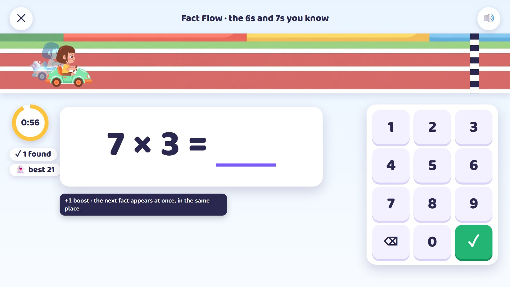
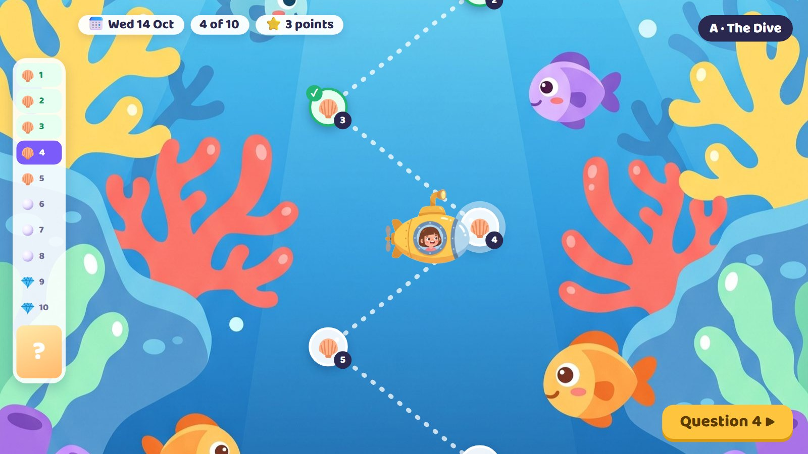
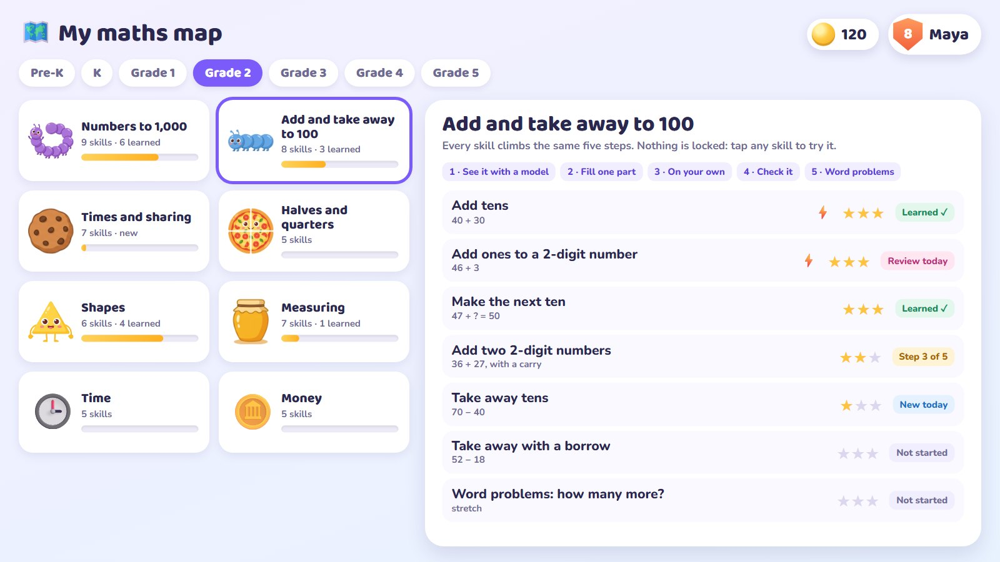
Three families: you, the friends, and living maths
One look for everything: flat, rounded, bright but calm, with no black outlines. That kind of drawing is easy to cut into parts and move.
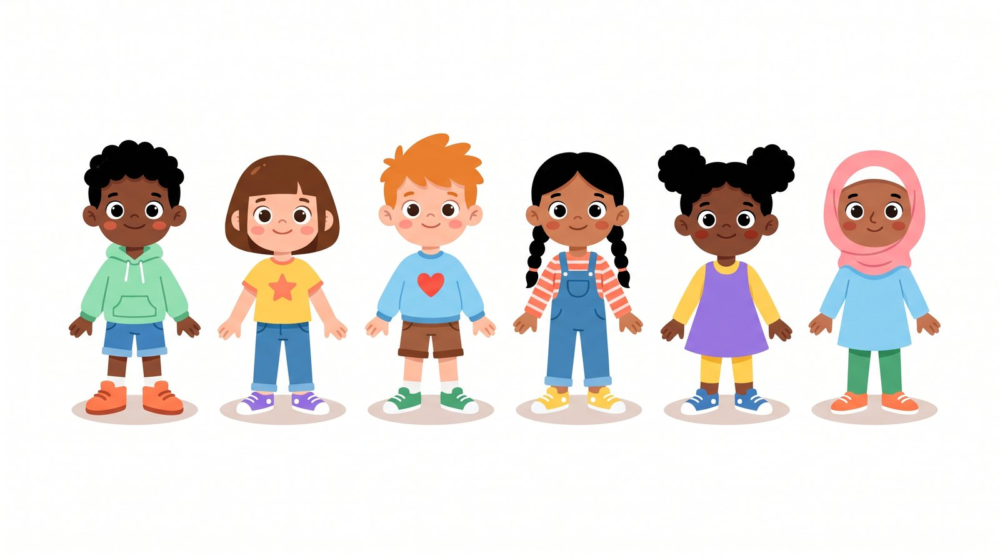
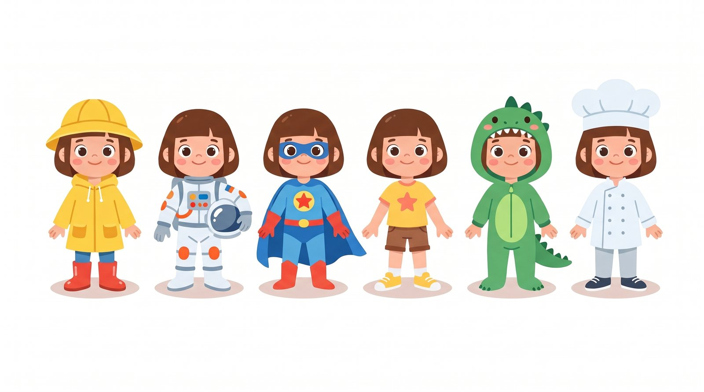
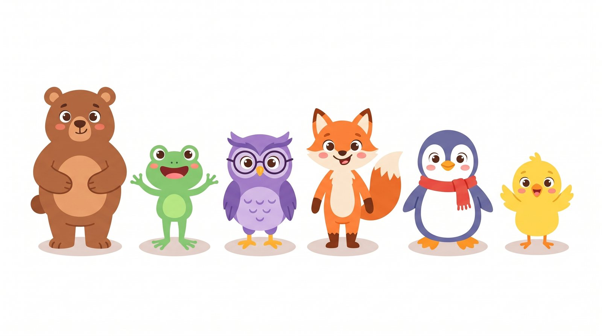
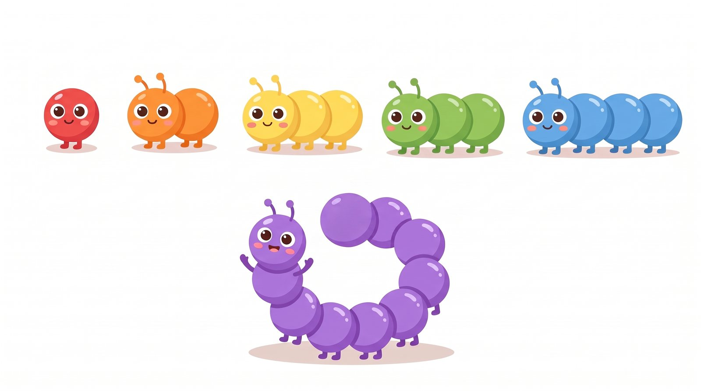
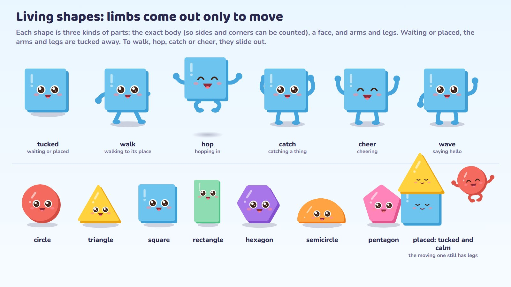
How the characters move (one shared skeleton, the "alive" layer, the tool to make them) is on the technical page. In short: every character has the same joints with the same names, so a move made once works on all of them. My pick for the tool is Rive.
A job to do, five short rounds, a finale
Every activity is a job with something that moves: you serve, tidy, launch or build. The maths is the action. Things answer the moment you touch them, the view slides along or climbs when the activity needs it, finished work stays, and the end shows the whole thing at once. One activity is five rounds, about two minutes.
Every skill climbs 5 steps
- See it with a model you can move
- Fill one part that is missing
- On your own: the whole task
- Check it: is this answer right? fix it
- Word problem: a friend needs it (spoken and pictured for non-readers)
When an answer isn't right
- No red, no "wrong", nothing glows on the right answer
- The child's attempt stays; the friend gives a thinking tip
- After a second miss: the working, step by step, then a fresh twin question
- Stars count first tries only, so a parent can trust them
| Age | Games | Little stories | Practice screens | Why |
|---|---|---|---|---|
| Pre-K | 70% | 20% | 10% | Big objects, hands-on, a voice asks |
| K | 50% | 30% | 20% | Actions turn into numbers and signs |
| Grades 1–2 | 30% | 25% | 45% | Models stay while written work starts |
| Grades 3–4 | 15% | 10% | 75% | Clear practice; a light game around the same maths |
| Grade 5 | 5% | 5% | 90% | Compact maths, short celebrations |
Seven activities, each with a storyboard
From age 3 to 10, so you can see how the same rules feel at each age. Each page walks through six moments (including a wrong try) and says what makes it fun, how the view moves, how it varies and what it needs.
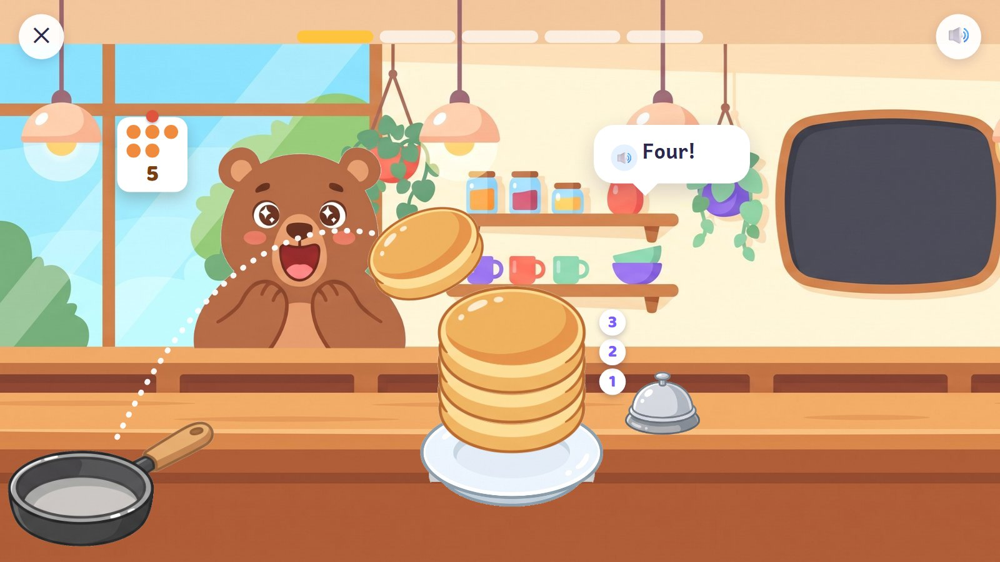
Pancake Café
Be the cook: flip just the right number of pancakes for each friend. Counting out.
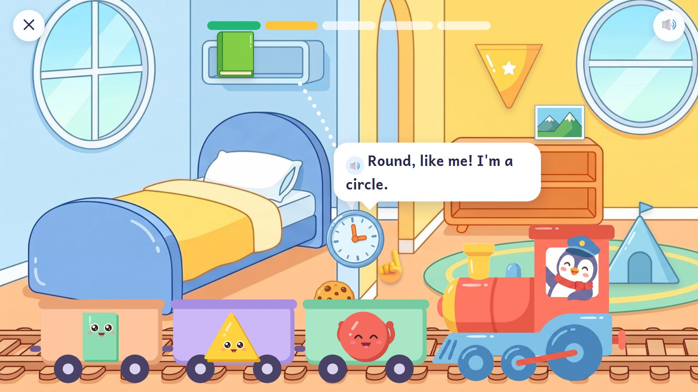
Tidy-Up Train
Tidy a house: each thing rides in the wagon of its shape. Shapes in real things.
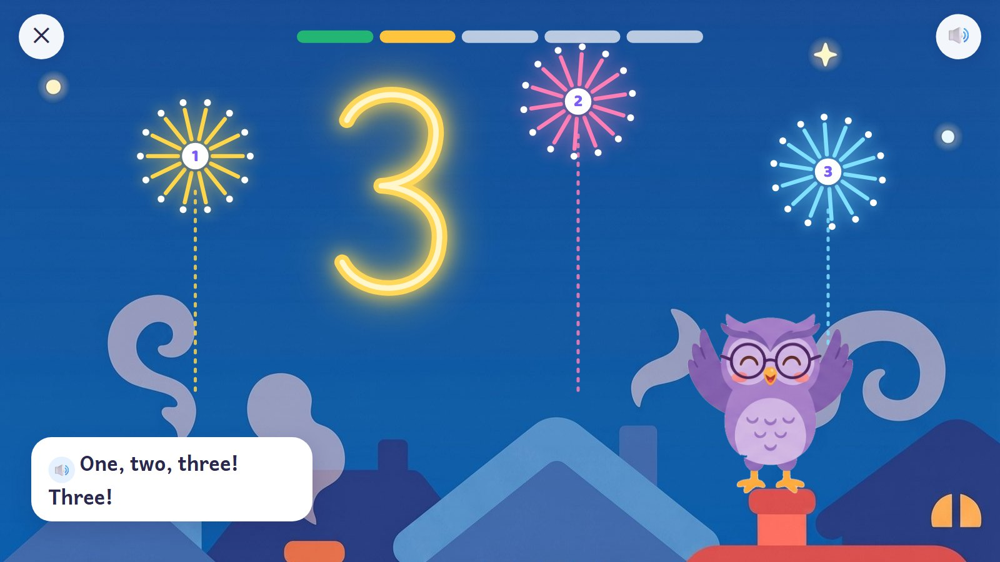
Firework Numbers
Trace numbers in the night sky; each fires as many fireworks as it says. Writing numbers.
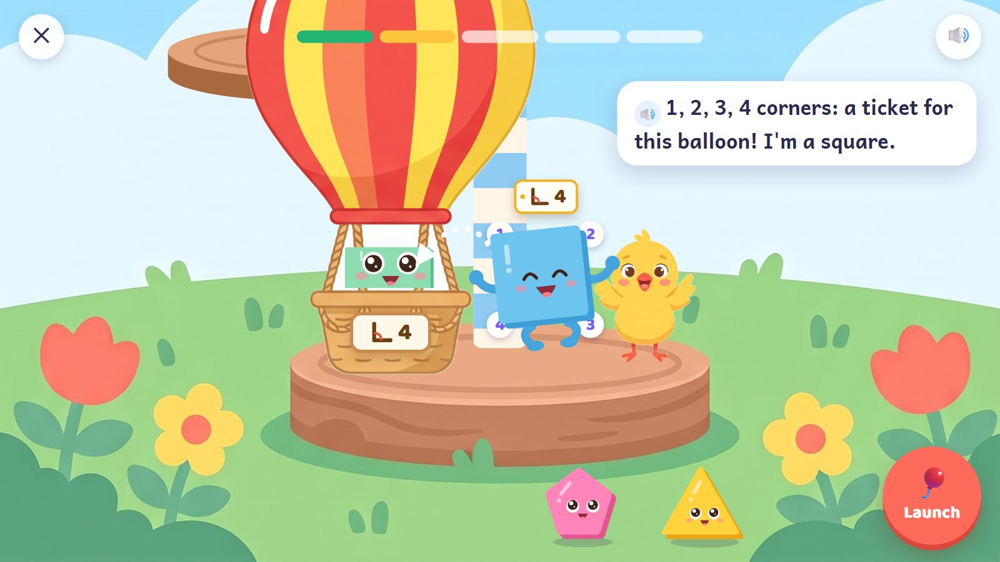
Balloon Tower
Check corners, hand out tickets, launch balloons up a tower. Shapes by their features.
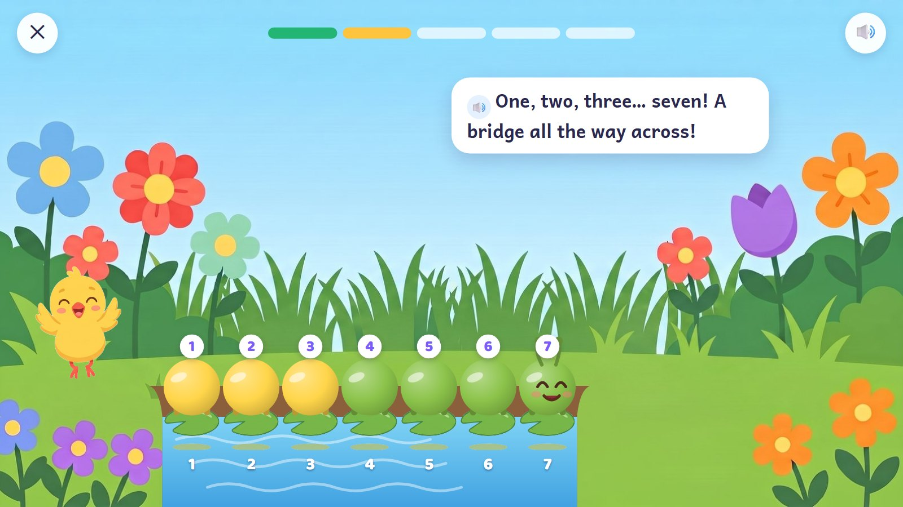
Caterpillar Bridges
Join and snip living numbers into bridges across streams. Adding and taking away.

Shape Builders
Build the fox's house up the screen; placed shapes tuck their arms and legs away.
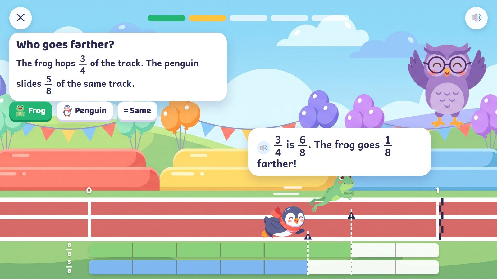
Owl's Fraction Race
Judge who goes farther: cut and shade the bars, then GO. Comparing fractions.
All 42 kinds of activity, and where each one plays ▸
| Type | Place | The child | Then | Finale |
|---|---|---|---|---|
| E01 Touch and count ★ | Pancake Café | taps the pan, counts, rings the bell | sideways: next customer | the whole counter eating |
| E02 Quick groups ★ | workshop trays | sees grouped dots, says how many | no move: groups stay | five trays open together |
| E03 Number match ★ | parcel desk | drags a number, an amount or a word to its match | no move | five parcels ready |
| E04 Number writing | Firework Numbers | traces with a spark | up: the next number | a fireworks show |
| E05 Number order ★ | loading rail | puts carriage numbers in order | sideways: next bay | five trains pass by |
| E06 Pair and compare ★ | café picnic table | links things one to one; more, fewer, equal | no move: both groups stay | the picnic opens |
| E07 Number-line hops ★ | garden crossings | chooses hop size and direction | sideways: next crossing | five routes join up the garden |
| E08 Sorting trays ★ | Tidy-Up Train | drags things into wagons by a rule | sideways: room to room | tidy rooms, a full train |
| E09 Join and split ★ | Caterpillar Bridges | joins or snips number caterpillars | sideways: next stream | a bridge parade |
| E10 Number bonds | café lunchboxes | fills the parts to make the whole | no move | five packed lunchboxes |
| E11 Place-value bundles | workshop packing mat | bundles tens, swaps, fills columns | no move: columns line up | five quantities packed |
| E12 Column workshop | workshop order book | writes digits, carries and borrows | no move: all working stays | five order slips printed |
| E13 Array builder ★ | garden planting bench | stretches rows and columns, gives the total | no move: the whole array | five beds bloom |
| E14 Fair sharing ★ | café picnic table | deals things onto plates, leftovers aside | no move | everyone joins the picnic |
| E15 Division chunks | workshop packing strip | takes away equal groups; answer and remainder | no move | a shipment list of five |
| E16 Fact pad ★ | Owl's desk; Fact Flow | taps or types a fact | no move | five fact-family cards |
| E17 Equal cuts | Owl's Fraction Race | cuts into equal parts, shades | no move: both wholes in view | five races and a medal |
| E18 Fraction line | the race track | puts markers on fractions; compares | no move | five flags on the line |
| E19 Fraction exchange | workshop strip desk | swaps equal pieces; joins or removes | no move | five equivalence cards |
| E20 Fraction overlays | see-through frames | overlays parts to multiply; fits strips to divide | no move | five model-and-sum records |
| E21 Decimal grids | measuring board | fills tenths and hundredths; compares, rounds | no move | five measurements |
| E22 Shape inspection ★ | Balloon Tower | checks corners, gives tickets, boards | up: next platform | balloons round the tower |
| E23 Shape fitting | Shape Builders | drags and turns pieces into place | up: the house grows | dusk, lights on |
| E24 Shape moves | design board | slides, turns or flips a shape onto a target | no move | five panels in a display |
| E25 Angle turn | hinged lamp | turns the arm; reads a protractor | no move | five angle designs |
| E26 Position and grid | garden delivery map | moves by position words or coordinates | no move: landmarks stay | five deliveries on the map |
| E27 Cube builder | model bench | places cubes, counts layers | no move | five models turn for a look |
| E28 Length tool | garden measuring bench | lays units or a ruler | no move: both ends in view | five measured pieces |
| E29 Mass balance | weighing desk | puts masses on; compares or balances | no move | five labelled parcels |
| E30 Capacity pour | water lab | tilts a cup; pours back the extra | no move | five tanks feed a fountain |
| E31 Unit exchange | exchange desk | moves amounts between unit trays | no move | five conversion labels |
| E32 Boundary walk | garden fence plan | traces the outside and adds the lengths | no move | five fenced plots |
| E33 Area cover | garden tile bench | covers with unit squares | no move | five tiled panels |
| E34 Clock hands | Owl's appointment desk | turns the hands; reads the time | no move | five appointments |
| E35 Time strip | Owl's planning desk | adds time blocks between start and end | no move | a day of five activities |
| E36 Calendar marks | Owl's calendar | marks dates; counts days on | no move | five events on the calendar |
| E37 Pay and change | café checkout | pays with coins and notes; gives change | no move | five receipts |
| E38 Graph marks | garden observation desk | places chart marks; reads scales | no move | five charts in a report |
| E39 Pattern maker | garden pattern rail | places the missing or next item | sideways: next strip | five pattern banners |
| E40 Rule machine | number station | feeds numbers through rules | no move | five input–rule–output records |
| E41 Equation balance | expression trays | fills missing numbers; equal sides | no move | five equations linked by = |
| E42 Logic board | garden route desk | places tiles to fit every clue | no move | five solved boards |
★ = the first 12 for the pilot. Scenes are shared: the café serves five types, the garden several, a workshop most of the tools, the owl's desk facts, time and calendars, the track fractions and Fact Flow. Grades 3–5 keep practice screens clean: a light theme and a payoff, not a game for its own sake.
Behind the scenes, an engine is one way of playing (count out, join and split, sort, trace…), and an activity is an engine plus its numbers plus one of the skill's five steps. 42 engines make 2,815 activities from Pre-K to Grade 5.
Coins from playing buy clothes; nothing is random
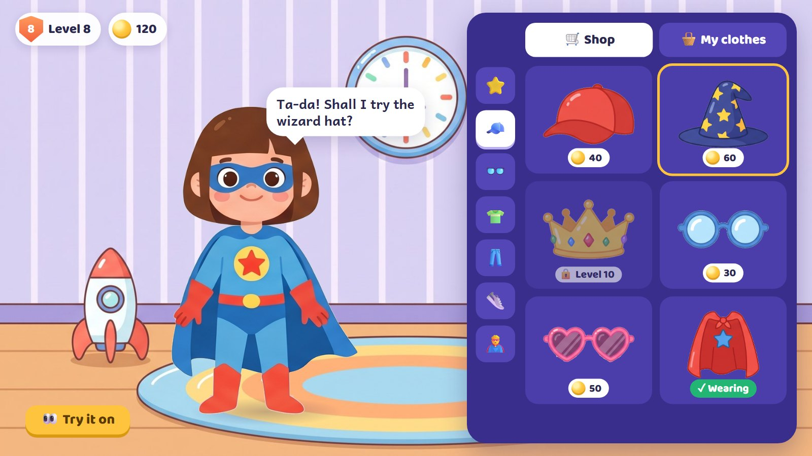
| Done | Coins | Limit |
|---|---|---|
| Stop 1: the warm-up | 5 | once a day, timed or not |
| An activity (5 rounds): stops 2–4, or free play | 5 | five a day |
| The whole road | +5 | once a day |
| Stop 5: today's challenge (finished, any score) | 20 | once a day, plus the day's card |
The road alone earns 45 coins (5 + 15 + 5 + 20), or 40 if the warm-up is skipped; two more activities in free play make 55, the most in a day. The launch shop has 105 items: 84 to buy (prices 20, 40, 80, 160 and 240 coins), 14 free starters, and 7 earned at levels. Skin, hair and face are always free. There are no mystery boxes, nothing expires, and no item makes the maths easier. More free play stays open after that; it just doesn't pay coins.
Parents get a separate page: skills learned, how often the child was right on the first try, where help was needed, and the time spent.
Small first, then wave by wave
| Step | What | Roughly |
|---|---|---|
| 0 · A playable preview my pick | The day's road with three of the new activities (my pick: Pancake Café, Balloon Tower and Caterpillar Bridges, one each for counting, shapes and adding), one rigged friend, the living shapes, the avatar with a dozen clothes, on the web. Something to put in a child's hands and show the client. | 2–3 weeks |
| 1 · The pilot | The first 12 engines plus number tracing (13 engines, 270 activities: Pre-K to Grade 2, plus the 2, 5 and 10 times tables), the Dive, Fact Flow, the map, the shop, the parents' page. | 8–12 weeks |
| 2 · The other 29 engines | Three waves: early foundations, school maths, the upper grades. | months; wave by wave |
| 3 · Accounts and phones | Sign-in and progress on every device, then iPhone and Android apps from the same code. | after the pilot |
One developer working with AI coding help. Someone who knows the chosen syllabus checks the maths of each band, and children try each step. How it would be built is on the technical page.
Questions
- One road a day: a warm-up race, three activities, then the day's challenge as the last stop. Does this work for you?
- The activities: are these fun and interactive enough? Which do you like most, and what would you change? (Each page has one more question of its own.)
- Today's challenge: the Dive (my pick), the Rocket or the Climb? And the daily card: our friends as heroes, or the child's own avatar? (its page)
- Fact Flow: do the storyboard and rules work for you, including no speed ranks? (its page)
- Living shapes: arms and legs only while moving, faces kept small once placed. Right?
- Syllabus: which one first: Sri Lanka's NIE, Singapore, Cambridge, or the US Common Core? The skill map works for any of them, but each needs its own mapping and checking.
- Ages: 3 to 10 (Pre-K to Grade 5)?
- The look: this flat style, the paper look of the second plan, or the clay of Clay Bay? Anything to change?
- The cast: the avatar, the six animal friends, the number caterpillars and the living shapes. Keep, change or add?
- Rigging: Rive with a freelance animator (my pick), or our own code rig with no animator? (technical page)
- Final art: will the client pay an illustrator to clean up the characters and clothes, or should we push AI drafts as far as they go?
- First step: the 2–3 week playable preview with Pancake Café, Balloon Tower and Caterpillar Bridges?
- For the client: web first, then phone apps? Free and paid parts? English first?
13 Oct 2026 · E:\work\new-math-app. Pictures are drafts made with Gemini; storyboards and mock-up screens are HTML
(docs/plan/the-plan/mock/).